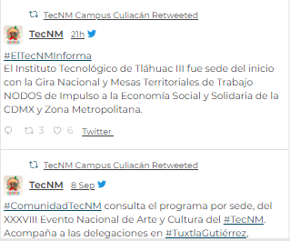

|
|
Tramites | Gobierno |
 |
Tecnologico | Oferta Educativa | Estudiantes | Maestros | Noticias | Egresados | Aspirantes | Extension Navolato |

Comunicacion |
||
Sigue Nuestras Redes |
||

|
||
|  |
Sitios de Interes |
||||

|
|
Dirección Juan de Dios Bátiz No. 310 Pte. , Col. Guadalupe,C.P. 80220 Culiacán Rosales, Sin. Contacto Email: webmaster@culiacan.tecnm.mx Conmutador: 667-454-0100 y 667-713-3804 |
Enlaces Portal de obligaciones de transparencia INAI |
|
|
Enlaces Participa Publicaciones Oficiales Marco Jurídico Plataforma Nacional de Transparencia Alerta Denuncia |
¿Que es gob.mx? Es el portal único de trámites, información y participacíon ciudadana. Leer mas Portal de datos abiertos Declaración de accesibilidad Aviso de privacidad integral Aviso de privacidad simplificado Terminos y Sondiciones Política de seguridad Mapa de sitio |
Denuncia contra servidores publicos Siguenos en |